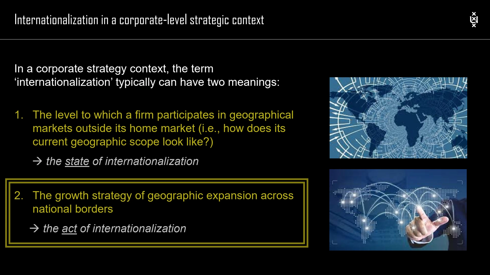

The framework
| Dimension / issue | What to compare | Why it matters |
|---|---|---|
| Cultural distance | Differences in language, norms and customer understanding. | The existing offer and operating assumptions may require adaptation. |
| Administrative distance | Differences in institutions and administrative arrangements. | The firm must understand the local operating context. |
| Geographical distance | Physical separation and location conditions. | Distance affects coordination and the delivery system. |
| Economic distance | Differences in income levels and economic conditions. | Demand and the economics of the offer may differ. |
| Liability of foreignness | Additional costs relative to indigenous competitors. | Adaptation, governance and unfamiliarity can disadvantage an entrant. |
| Liability of outsidership | Lack of a relevant network position. | Trust, commitment and access to relationships must be built. |
Key distinctions
Five entry modes
Exporting sells home-produced products abroad. Licensing gives a foreign partner authorized use of relevant assets. A joint venture establishes shared ownership with partners. Greenfield investment builds a wholly owned operation from scratch. Brownfield investment uses an existing firm or facility, including an acquisition of control. The lecture compares these through risk, resource commitment, organizational control and entry speed.
Measuring internationalization
Distinguish intensity, such as the share of revenues abroad, from geographical spread, such as the number of countries, and concentration within regions. A single foreign revenue percentage does not describe all three.
Benefits and coordination costs
The course discusses economies of scale, access to knowledge, location advantages and following customers. It also emphasizes added coordination complexity. The performance relationship shown in the lecture should be understood as a research pattern rather than a target percentage of foreign business.
How to use it
- Compare candidate markets using CAGE and relevant demand and competitive evidence.
- Identify foreignness and network-access costs.
- Select an entry mode consistent with the required control and available resources.
Keep in mind
Similar geography is not the same as cultural or administrative fit. This page describes the 2023 course framework, not current country-specific guidance.
What is outsidership?
Reveal the explanation
The disadvantage arising from not yet occupying a relevant position in local business networks.
Read the classroom original
Complete pages from the supplied lecture slides. Select a page to read, enlarge or browse its extracted text. Page numbers refer to the PDF’s physical page order.
